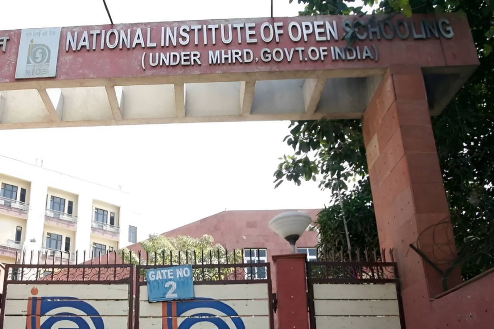
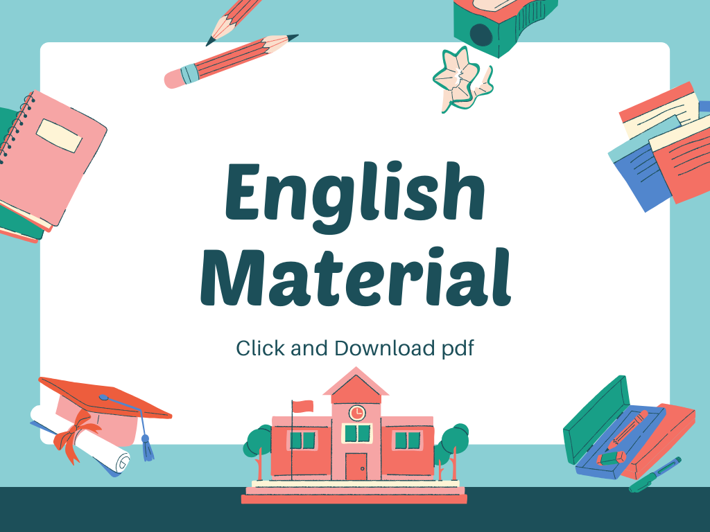
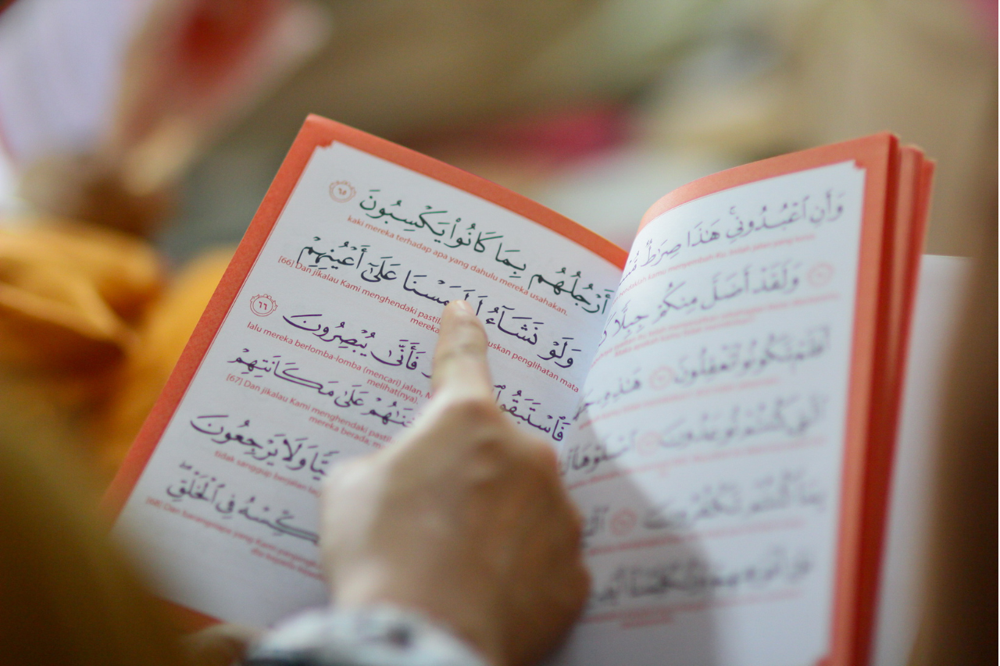
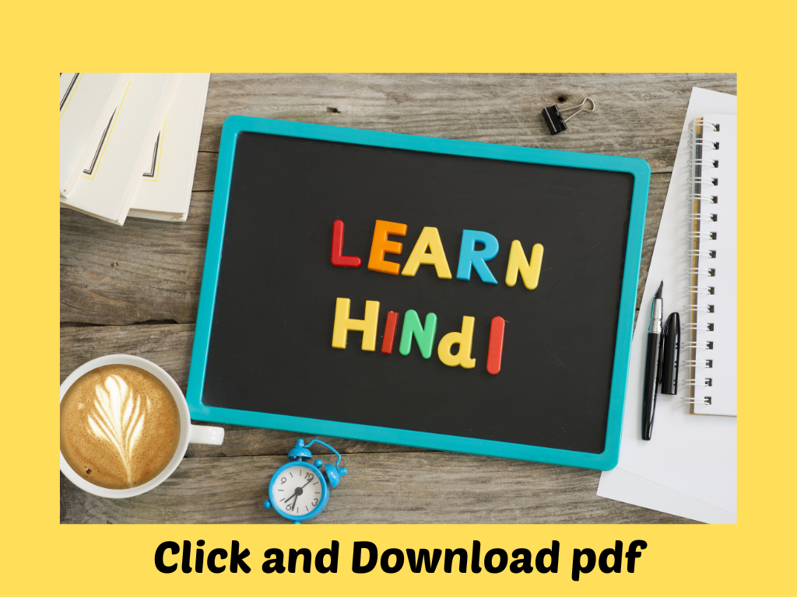
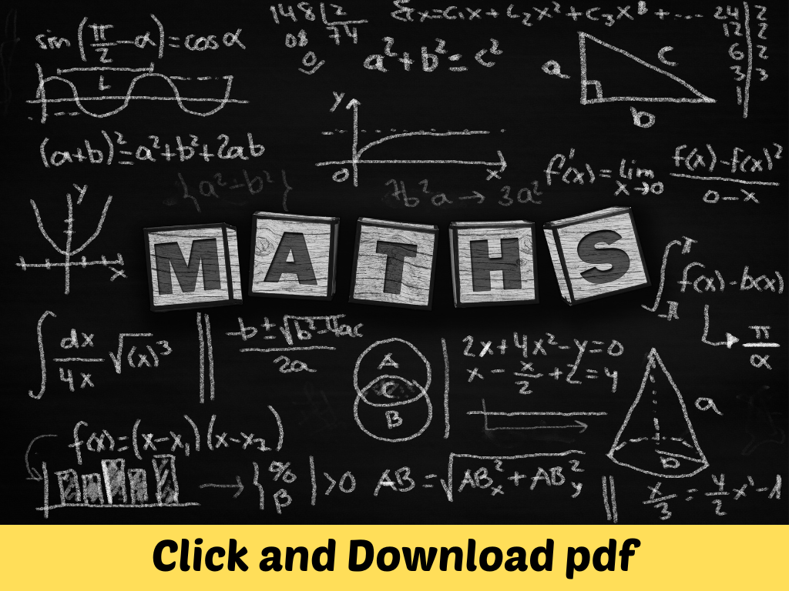
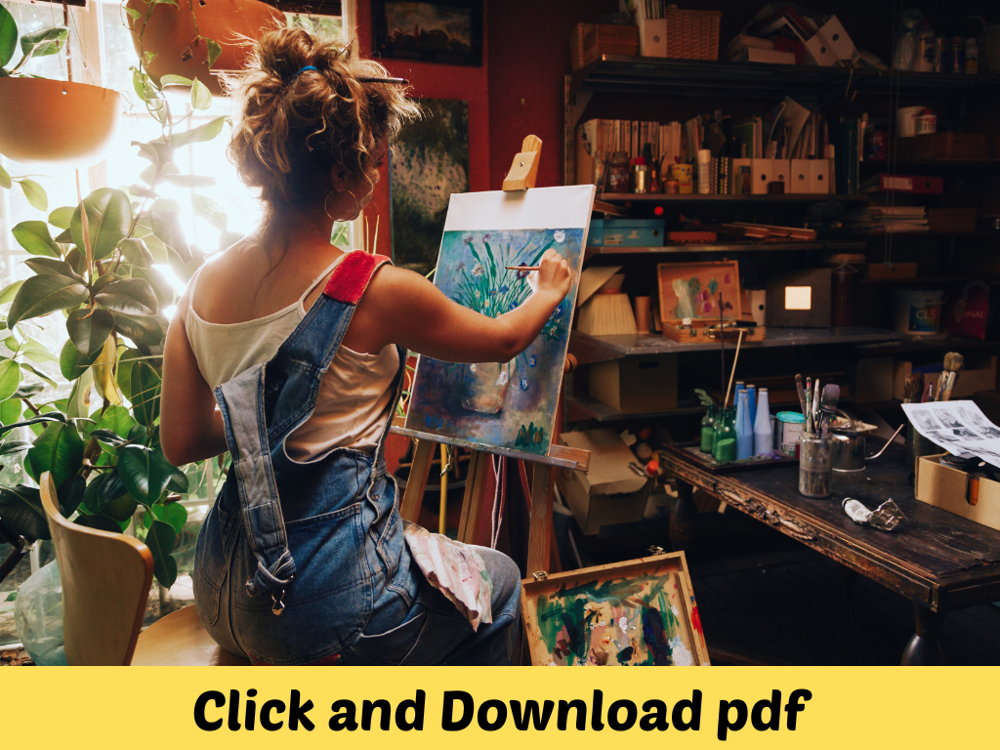
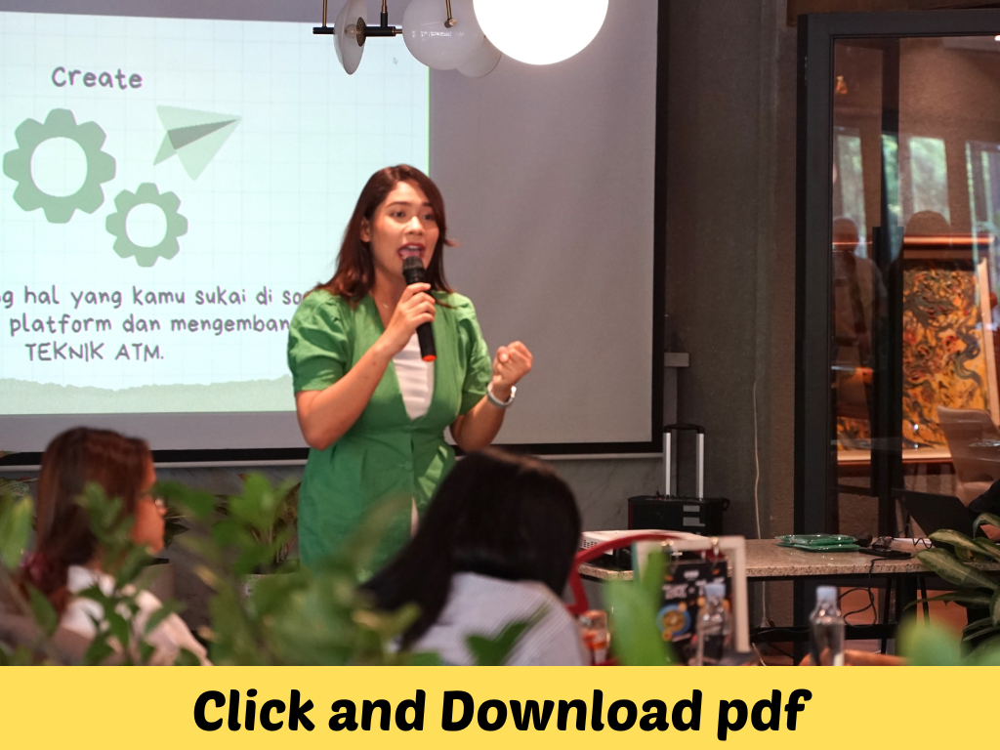
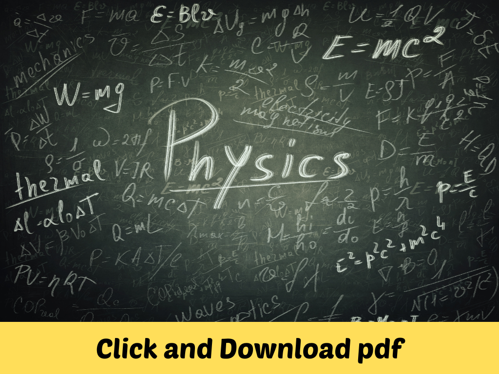
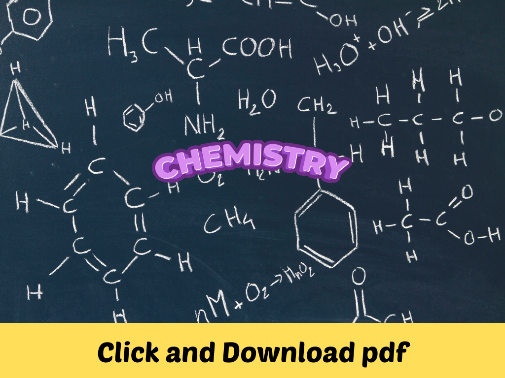
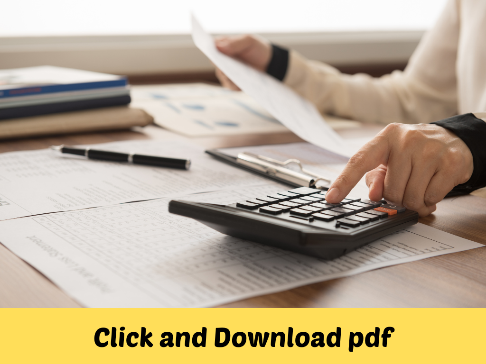

Course
NIOS AND BOSSE ADMISSION AND COACHING CENTER
Admission and Guidance Center
Open and Distance Learning (ODL) is the provision of distance education opportunities in ways that seek to mitigate or remove barriers to access, such as finances, prior learning, age, social, work or family commitments, disability , incarceration or other such barriers. “Open” refers to a commitment that removes any unnecessary barriers to access learning. Distance education refers to teaching and learning that temporarily separates teacher and learner in time and/or place; uses multiple media for delivery of instruction; involves two-way communication and possibly occasional face-to-face meeting for tutorials and learner-learner interaction. Open learning is not the same as distance learning, but both are complementary and hence the two terms are often used together as open and distance learning.

.jpg)
How to Pass from NIOS / BOSSE Board in Class 10th & 12th ?
There are so many students who are good in one subject but poor in others which results to FAIL in final exams.Here We started Nios Coaching in Nagercoil and Nios Admission in Nagercoil. In NIOS / BOSSE, you can appear for few subjects in first half of the year and for the remaining subject next half of the session. In this way students can pass a simple subject and a difficult subject first and then pass the remaining subjects later. If someone has failed in class 9 or 11 and wants to take the class 10th or 11th exam without class again then NIOS / BOSSE is the best option for them.
Inspired to succeed How to Pass from NIOS Board in Class 10th & 12th ?
There are so many students who are good in one subject but poor in others which results to FAIL in final exams. In NIOS, you can appear for few subjects in first half of the year and for the remaining subject next half of the session.
What is NIOS ?
NIOS is an “Open School” that caters to the needs of a heterogeneous group of learners up to pre-degree level. It was started as a project with in-built flexibilities by the Central Board of Secondary Education (CBSE) in 1979. In 1986, the National Policy on Education suggested strengthening of Open School System for extending open learning facilities in a phased manner at secondary level all over the country as an independent system with its own curriculum and examination leading to certification.
.jpg)
Consequently, the Ministry of Human Resource Development (MHRD), Government of India set up the National Open School (NOS) in November 1989. The pilot project of CBSE on Open School was amalgamated with NOS. Through a Resolution (No. F.5-24/90 Sch.3 dated 14 September 1990 published in the Gazette of India on 20 October 1990), the National Open School (NOS) was vested with the authority to register, examine and certify students registered with it up to pre-degree level courses. In July 2002, the Ministry of Human Resource Development amended the nomenclature of the organisation from the National Open School (NOS) to the National Institute of Open Schooling (NIOS) with a mission to provide relevant continuing education at school stage, up to pre-degree level through Open Learning system to prioritized client groups as an alternative to formal system, in pursuance of the normative national policy documents and in response to the need assessments of the people, and through it to make its share of contribution: To universalisation of education, To greater equity and justice in society, and To the evolution of a learning society.
What does NIOS do?
The National Institute of Open Schooling (NIOS) provides opportunities to interested learners by making available the following Courses/Programmes of Study through open and distance learning (ODL) mode. Open Basic Education (OBE) Programme for 14+ years age group, adolescents and adults at A, B and C levels that are equivalent to classes III, V and VIII of the formal school systems.
- Secondary Education Course
- Senior Secondary Education Course
- Vocational Education Courses
- Programmes Life Enrichment Programmes
.jpg)
Envisages schooling by providing a learning continuum based on graded curriculum ensuring quality of education for children, neo-literates, school drop-outs/left-outs and NFE completers.
For implementation of OBE programme, the NIOS has partnership with about 853 Agencies providing facilities at their study centres. It is a sort of academic input relationship with partnering agencies. The NIOS provides resource support (such as adaptation of NIOS model curricula, study materials, joint certification, orientation of Resource Persons and popularisation of OBE) to the voluntary agencies and Zila Saksharta Samities (ZSSs) etc., for implementation of its OBE programme.
At the Secondary and Senior Secondary levels, NIOS provides flexibility in the choice of subjects/courses, pace of learning, and transfer of credits from CBSE, some Board of School Education and State Open Schools to enable learner’s continuation. A learner is extended as many as nine chances to appear in public examinations spread over a period of five years. The credits gained are accumulated till the learner clears required credits for certification. The learning strategies include; learning through printed self-instructional material, audio and video programmes, participating in personal contact programme (PCP), and Tutor Marked Assignments (TMA). Enrichment is also provided to the learners through the half yearly magazine “Open Learning”.
.jpg)
The Study Material is made available in English, Hindi and Urdu mediums. The On-Demand Examination System (ODES) is in operation at Secondary and Senior Secondary stage. NIOS offers 28 subjects in eight mediums (Hindi, English, Urdu, Marathi, Telugu, Gujarati, Malayalam and Odia) for Secondary Examinations and 28 subjects in Hindi, English, Urdu, Bengali and Odia mediums for Senior Secondary Examinations. Besides these, NIOS has provision of offering Vocational subjects in combination with Academic subjects at secondary stage and 20 vocational subjects in combination with Academic subjects at Senior Secondary level.
Acknowledging the fact that the young entrepreneurs will be the wealth of the nation, the learner friendly Vocational Education programmes of NIOS provide excellent prospects for the learners. It offers Vocational Education programmes in different areas such as Agriculture, Business and Commerce, Engineering and Technology, Health and Paramedical, Home Science and Hospitality Management, Teacher Training, Computer and IT related sectors, Life Enrichment Programmes and General Services. Knowledge, skills and qualities of entrepreneurship have been made essential components in curricula for Vocational Education with emphasis on practical and on the job training in related industrial units.
NIOS operates through a network of five Departments, 23 Regional Centres, two Sub Regional Centres, two NIOS Cells, and more than 7400 Study Centres (AIs/AVIs) spread all over the country and abroad. NIOS is the largest Open Schooling system in the world with cumulative enrolment of 4.13 million (during last 5 years).
nios is among few Nios centre who have highest pass % students. nios have professional and trained faculty who understand the requirement of weaker or average students and they educate them accordingly. In short span of time nios is among the popular NIOS institute. nios is open for franchisee and with the popularity they have gained in last 3 year, franchisee will definitely be profitable in short span of time.
Open Schooling for 10th, 11th and 12th
Here is an opportunity for flexible learning at St.Joseph Community College. It is a Lifelong Learning to acquire knowledge and Skills for gainful employment or career enhancement anywhere anytime through non-traditional method of education.
Enhance your carrier more effectively with adding quality in life with education, with its Secondary and Senior Secondary courses.
ELIGIBILITY
15 years completed
Awarding Body:
Nios / Bosse / Cise
(Registration under NITI Aayog, Govt. Of India, Registration Number: KA/2009/0021735)
10th Standard Schooling
- English
- Arabic
- Hindi
- Maths
- Science
- Social Science
Material in PDF
- Learner Guide (229 KB)
- First page
- Snake Bite (138 KB)
- How the Squirrel Got Its Stripes (148 KB)
- Kondiba-A Hero (256 KB)
- Tall Trees (150 KB)
- A Tiger Comes to Town-I (289 KB)
- A Tiger Comes to Town-II (366 KB)
- The Shoeshine (185 KB)
- A Birthday Letter (162 KB)
- Nine Gold Medals (265 KB)
- Noise: How It Affects Our Lives (190 KB)
- My Elder Brother (192 KB)
- Indian Weavers (152 KB)
- The Last Stone Mason (206 KB)
- Stealing and Atonement (130 KB)
- My Vision for India (155 KB)
- My Only Cry (349 KB)
- Caring for Others (181 KB)
- The Little Girl (208 KB)
- A Prayer for Healing (224 KB)
- New Good Things from Rubbish (227 KB)
- The Village Pharmacy (217 KB)
- The Truth (110 KB)
- The Return of the Lion (One Act Play) (111 KB)
- Co-operate and Prosper (373 KB)
- Once Upon a Time (122 KB)
- Ustad Bismillah Khan (316 KB)
- The Parrot Who Wouldn’t Talk (806 KB)
- Sample Question Paper (46 KB)

Material in PDF

Material in PDF
- प्रथम पृष्ठ
- बहादुर (कहानी) (111 MB)
- दोहे (कविता) (111 MB)
- गिल्लू (रेखाचित्र) (111 MB)
- आहवान (कविता) (111 MB)
- राबर्ट नर्सिंग होम मैं (रेपोतार्ज) (111 MB)
- भारत की ये बहादुर बेटियाँ (फीचर) (111 MB)
- आजादी (कविता) (111 MB)
- चन्द्रगहना से लौटती बेर (कविता) (111 MB)
- अख़बार की दुनिया (गद्य) (111 MB)
- पढ़ें कैसे (गद्य) (111 MB)
- सार कैसे लिखें (लेखन) (111 MB)
- इसे जगाओ (कविता) (111 MB)
- सुखी राजकुमार (कहानी) (111 MB)
- बूढ़ी पृथ्वी का दुख (कविता) (111 MB)
- अँधेर नगरी (नाटक) (27.5 MB)
- अपना पराया (वैज्ञानिक) (27.6 MB)
- बीती विभावरी जाग री (कविता) (27.6 MB)
- नाखून क्यों बढ़ते हैं (ललित निबंध) (27.6 MB)
- शतरंज के खिलाडी (कहानी) (27.6 MB)
- उनको प्रणाम (कविता) (27.6 MB)
- पत्र कैसे लिखें (लेखन) (27.6 MB)
- निबंध कैसे लिखें (लेखन) (27.6 MB)

MODULE I: ALGEBRA
- First Page
- Chapter 1. Number Systems (2 MB)
- Chapter 2. Exponents and Radicals (2.5 MB)
- Chapter 3. Algebraic Expressions and Polynomials (2.5 MB)
- Chapter 4. Special Products and Factorization (2.5 MB)
- Chapter 5. Linear Equations (2.5 MB)
- Chapter 6. Quadratic Equations (2.5 MB)
- Chapter 7. Arithmetic Progressions (2.5 MB)
MODULE II: COMMERCIAL MATHEMATICS
MODULE III: GEOMETRY
- Chapter 10. Lines and Angles (17 MB)
- Chapter 11. Congruence of Triangles (17 MB)
- Chapter 12. Concurrent Lines (17 MB)
- Chapter 13. Quadrilaterals (17 MB)
- Chapter 14. Similarity of Triangles (17 MB)
- Chapter 15. Circles (17 MB)
- Chapter 16. Angles in a Circle and Cyclic Quadrilateral (17 MB)
- Chapter 17. Secants, Tangents and their Properties (17 MB)
- Chapter 18. Constructions (17 MB)
- Chapter 19. Co-ordinate Geometry (17 MB)
MODULE IV: MENSURATION
- Chapter 20. Perimeters and Area of Plane Figures (17 MB)
- Chapter 21. Surface Area and Volume of Solid Figures (17 MB)
MODULE V: TRIGNOMETRY
- Chapter 22. Introduction to Trigonometry (17 MB)
- Chapter 23. Trigonometric Ratios of Some Special Angles (17 MB)
MODULE VI: STATISTICS

- Curriculum (41.1 MB)
- First Page
- 1. Measurement in Science and Technology (41.1 MB)
- 2. Matter in Our Surroundings (41.1 MB)
- 3. Atom and Molecules (41.1 MB)
- 4. Chemical Reaction and Equations (41.1 MB)
- 5. Atomic Structure (41.1 MB)
- 6. Periodic Classification of Elements (41.1 MB)
- 7. Chemical Bonding (41.1 MB)
- 8. Acids, Bases and Salts (41.1 MB)
- 9. Motion and its Description (41.1 MB)
- 10. Force and Motion (41.1 MB)
- 11. Gravitation (41.1 MB)
- 12. Sources of Energy (41.1 MB)
- 13. Work and Energy (41.1 MB)
- 14. Thermal Energy (41.1 MB)
- 15. Light Energy (41.1 MB)
- 16. Electrical Energy (41.1 MB)
- 17. Magnetic Effect of Electric Current (41.1 MB)
- 18. Sound and Communication (41.1 MB)
- 19. Classification of Living Organisms (37.3 MB)
- 20. History of Life on Earth (37.3 MB)
- 21. Building Blocks of Life – Cell and Tissues (37.3 MB)
- 22. Life Processes – 1 : Nutrition, Transportation, Respiration and Excretion (37.3 MB)
- 23. Life Processes – 2 : Control and Coordination (37.3 MB)
- 24. Life Processes – 3 : Reproduction (37.3 MB)
- 25. Heredity (37.3 MB)
- 26. Air and Water (37.3 MB)
- 27. Metals and Non-metals (37.3 MB)
- 28. Carbon and Its Compounds (37.3 MB)
- 29. Natural Environment (37.3 MB)
- 30. Human Impact on Environment (37.3 MB)
- 31. Food Production (37.3 MB)
- 32. Health and Hygiene (37.3 MB)
- Lab Manual (10.4 MB)
Material in PDF
- INTRODUCTION TO SOCIAL SCIENCE (147 KB)- Download
- First Page- Download
- ANCIENT WORLD (157 KB)- Download
- MEDIEVAL WORLD- Download
- MODERN WORLD – I (258 KB)- Download
- MODERN WORLD – II (389 KB)- Download
- IMPACT OF BRITISH RULE ON INDIA: ECONOMIC, SOCIAL AND CULTURAL (1757-1857) (389 KB) - Download
- RELIGIOUS AND SOCIAL AWKENING IN COLONIAL INDIA (398 KB) - Download
- POPULAR RESISTANCE TO THE BRITISH RULE (298 KB)- Download
- INDIAN NATIONAL MOVEMENT (254 KB)- Download
- PHYSIOGRAPHY OF INDIA (354 KB) - Download
- CLIMATE (218 KB) - Download
- BIO-DIVERSITY (2151 KB)- Download
- AGRICULTURE IN INDIA(424 KB)- Download
- TRANSPORT AND COMMUNICATION(594 KB) - Download
- POPULATION: OUR GREATEST RESOURCE(600 KB) - Download
- CONSTITUTIONAL VALUES AND POLITICAL SYSTEM IN INDIA(284 KB)- Download
- FUNDAMENTAL RIGHTS AND FUNDAMENTAL DUTIES(477 KB)- Download
- INDIA – A WELFARE STATE(347 KB)- Download
- LOCAL GOVERNMENTS AND FIELD ADMINISTRATION(625 KB)- Download
- GOVERNANCE AT THE STATE LEVEL(468 KB) - Download
- GOVERNANCE AT THE UNION LEVEL(944 KB) - Download
- POLITICAL PARTIES AND PRESSURE GROUPS(1562 KB)- Download
- PEOPLE’S PARTICIPATION IN THE DEMOCRATIC PROCESS(499 KB) - Download
- CHALLENGES TO INDIAN DEMOCRACY(5580 KB) - Download
- NATIONAL INTEGRATION AND SECULARISM(525 KB)- Download
- SOCIO-ECONOMIC DEVELOPMENT AND EMPOWERMENT OF DISADVANTAGED GROUPS(825 KB)- Download
- ENVIRONMENTAL DEGRADATION AND DISASTER MANAGEMENT(426 KB) - Download
- PEACE AND SECURITY(526 KB)- Download
- Sample Paper(573 KB) - Download
- Curriculum (41.1 MB)
- First Page
- 1. Measurement in Science and Technology (41.1 MB)
- 2. Matter in Our Surroundings (41.1 MB)
- 3. Atom and Molecules (41.1 MB)
- 4. Chemical Reaction and Equations (41.1 MB)
- 5. Atomic Structure (41.1 MB)
- 6. Periodic Classification of Elements (41.1 MB)
- 7. Chemical Bonding (41.1 MB)
- 8. Acids, Bases and Salts (41.1 MB)
- 9. Motion and its Description (41.1 MB)
- 10. Force and Motion (41.1 MB)
- 11. Gravitation (41.1 MB)
- 12. Sources of Energy (41.1 MB)
- 13. Work and Energy (41.1 MB)
- 14. Thermal Energy (41.1 MB)
- 15. Light Energy (41.1 MB)
- 16. Electrical Energy (41.1 MB)
- 17. Magnetic Effect of Electric Current (41.1 MB)
- 18. Sound and Communication (41.1 MB)
- 19. Classification of Living Organisms (37.3 MB)
- 20. History of Life on Earth (37.3 MB)
- 21. Building Blocks of Life – Cell and Tissues (37.3 MB)
- 22. Life Processes – 1 : Nutrition, Transportation, Respiration and Excretion (37.3 MB)
- 23. Life Processes – 2 : Control and Coordination (37.3 MB)
- 24. Life Processes – 3 : Reproduction (37.3 MB)
- 25. Heredity (37.3 MB)
- 26. Air and Water (37.3 MB)
- 27. Metals and Non-metals (37.3 MB)
- 28. Carbon and Its Compounds (37.3 MB)
- 29. Natural Environment (37.3 MB)
- 30. Human Impact on Environment (37.3 MB)
- 31. Food Production (37.3 MB)
- 32. Health and Hygiene (37.3 MB)
- Lab Manual (10.4 MB)
Material in PDF
- INTRODUCTION TO SOCIAL SCIENCE (147 KB)- Download
- First Page- Download
- ANCIENT WORLD (157 KB)- Download
- MEDIEVAL WORLD- Download
- MODERN WORLD – I (258 KB)- Download
- MODERN WORLD – II (389 KB)- Download
- IMPACT OF BRITISH RULE ON INDIA: ECONOMIC, SOCIAL AND CULTURAL (1757-1857) (389 KB) - Download
- RELIGIOUS AND SOCIAL AWKENING IN COLONIAL INDIA (398 KB) - Download
- POPULAR RESISTANCE TO THE BRITISH RULE (298 KB)- Download
- INDIAN NATIONAL MOVEMENT (254 KB)- Download
- PHYSIOGRAPHY OF INDIA (354 KB) - Download
- CLIMATE (218 KB) - Download
- BIO-DIVERSITY (2151 KB)- Download
- AGRICULTURE IN INDIA(424 KB)- Download
- TRANSPORT AND COMMUNICATION(594 KB) - Download
- POPULATION: OUR GREATEST RESOURCE(600 KB) - Download
- CONSTITUTIONAL VALUES AND POLITICAL SYSTEM IN INDIA(284 KB)- Download
- FUNDAMENTAL RIGHTS AND FUNDAMENTAL DUTIES(477 KB)- Download
- INDIA – A WELFARE STATE(347 KB)- Download
- LOCAL GOVERNMENTS AND FIELD ADMINISTRATION(625 KB)- Download
- GOVERNANCE AT THE STATE LEVEL(468 KB) - Download
- GOVERNANCE AT THE UNION LEVEL(944 KB) - Download
- POLITICAL PARTIES AND PRESSURE GROUPS(1562 KB)- Download
- PEOPLE’S PARTICIPATION IN THE DEMOCRATIC PROCESS(499 KB) - Download
- CHALLENGES TO INDIAN DEMOCRACY(5580 KB) - Download
- NATIONAL INTEGRATION AND SECULARISM(525 KB)- Download
- SOCIO-ECONOMIC DEVELOPMENT AND EMPOWERMENT OF DISADVANTAGED GROUPS(825 KB)- Download
- ENVIRONMENTAL DEGRADATION AND DISASTER MANAGEMENT(426 KB) - Download
- PEACE AND SECURITY(526 KB)- Download
- Sample Paper(573 KB) - Download
10th Standard Non-Schooling
- English
- Data Entry Operations
- Painting
- Home Science
- Business Studies
Material in PDF
- Learner Guide (229 KB)
- First page
- Snake Bite (138 KB)
- How the Squirrel Got Its Stripes (148 KB)
- Kondiba-A Hero (256 KB)
- Tall Trees (150 KB)
- A Tiger Comes to Town-I (289 KB)
- A Tiger Comes to Town-II (366 KB)
- The Shoeshine (185 KB)
- A Birthday Letter (162 KB)
- Nine Gold Medals (265 KB)
- Noise: How It Affects Our Lives (190 KB)
- My Elder Brother (192 KB)
- Indian Weavers (152 KB)
- The Last Stone Mason (206 KB)
- Stealing and Atonement (130 KB)
- My Vision for India (155 KB)
- My Only Cry (349 KB)
- Caring for Others (181 KB)
- The Little Girl (208 KB)
- A Prayer for Healing (224 KB)
- New Good Things from Rubbish (227 KB)
- The Village Pharmacy (217 KB)
- The Truth (110 KB)
- The Return of the Lion (One Act Play) (111 KB)
- Co-operate and Prosper (373 KB)
- Once Upon a Time (122 KB)
- Ustad Bismillah Khan (316 KB)
- The Parrot Who Wouldn’t Talk (806 KB)
- Sample Question Paper (46 KB)
Material in PDF
Material in PDF
- Curriculum (119 KB)
- Painting in English Medium (15 KB)
- First Page
- Lesson -1 History and appreciation of Indian art from 3000 B.C – 600 A.D
- Lesson – 2 History and appreciation of art from 7th Century A.D – 12 Century A.D
- Lesson – 3 History and appreciation of art from 13 Century A.D – 18 Century A.D
- Lesson – 4 Introduction to Indian Folk Art
- Lesson – 5 Renaissance Lesson – 6 Impressionism and Post Impressionism
- Lesson – 6 IMPRESSIONISM
- Lesson – 7 Cubism Sur-realism and Abstract Art
- Lesson – 8 pioneers of contemporary Indian Art
- Lesson – 9 Contemporary Indian Art
- Practical – 1 Tools and Material (Guideline)
- Practical – 2 Object (Guideline)
- Practical – 3 Nature study (Guideline)
- Practical – 4 Human Figure (Guideline)
- Practical – 5 Study of Animals and Birds (Guideline)
- Practical – 6 Composition (Guideline)
- Sample Question Paper
- Practical Pre-page.
- Practical -1
- Practical -2
- Practical -3
- Practical -4

Material in PDF
Book 1
- What is Home Science (147 KB)
- Food and its Nutrients (289 KB)
- Food Groups (2.89 MB)
- Methods of Cooking Food (252 KB)
- Preservation of Food (215 KB)
- Environment (279 KB)
- Health (354 KB)
- Communicable and Lifestyle Diseases (188 KB)
- Care and Maintenance of Fabric (737 KB)
- Fibre to Fabric (399 KB)
- Fabric Finishes (251 KB)
- Curriculum (30 KB)
- Housing (617 KB)
- Safety in Home (186 KB)
- Introduction to Resources (270 KB)
- Managing Time and Energy (148 KB)
- Managing Income (208 KB)
- Life Begins (166 KB)
- Concept of Development (284 KB)
- My Family and I (311 KB)
- Adolescence: Charms and Challenges (418 KB)
- Ethics in Daily Life (185 KB)
- Consumer! Beware, Be Aware (6.29 MB)
- Question Paper Design (26 KB)
- Sample Question Paper (61 KB)
- Practical Manual (68 KB)
Book 2
Material in PDF
- Curriculum (270 KB)
- First Page MODULE 1
- Lesson 1. Nature and Scope of Business (69 KB)
- Lesson 2. Industry and Commerce (42 KB) MODULE 2
- Lesson 3. Sole Proprietorship, Partnership & Hindu Undivided Family (31 KB)
- Lesson 4. Cooperative Societies and Joint Stock Companies. (40 KB) MODULE 3
- Lesson 5. Transport Services (45 KB)
- Lesson 6. Warehousing (25 KB)
- Lesson 7. Communication Services (80 KB)
- Lesson 8. Postal and Courier Services (38 KB)
- Lesson 9. Banking Services (30 KB)
- Lesson 10. Insurance Services (38 KB)
- Lesson 11. Outsourcing (41 KB) MODULE 4
- Lesson 12. Purchase and Sale (42 KB)
- Lesson 13. Channels of Distribution
- Lesson 14. Retail Trade (41 KB)
- Lesson 15. Advertising (98 KB)
- Lesson 16. Sales Promotion and Personal Selling (98 KB) MODULE 5
- Lesson 17. Rights and Responsibilities of Consumers (98 KB)
- Lesson 18. Consumer Protection (98 KB) MODULE 6
- Lesson 19. Choosing a Career (98 KB)
- Lesson 20. Entrepreneurship (98 KB) MODULE 7
- Lesson 21. Project Work (98 KB)
- Sample Question Paper (98 KB)

Senior Secondary Courses Science
- English
- Physics
- Chemistry
- Maths
- Biology
- Computer Science -
Material in PDF
- 1 – My First Steps
- 2 – Leisure
- 3 – Reading With Understanding
- 4 – Father, Dear Father
- 5 – Fuel of the Future
- 6 – My Grandmothers House
- 7 – Reading With Understanding
- 8 – A Case of Suspicion
- 9 – My Son will not a Beggar be
- 10 – Where the Mind is Without Fear
- 11 – Reading With Understanding
- 12 – If I Were You
- 13 – The Tiger in the Tunnel
- 14 – The Road not Taken
- 15 – Reading With Understanding
- 16 – I Must Know the Truth
- 17 – India-Her Past and Future
- 18 – Night of the Scorpion
- 19 – Reading With Understanding
- 20 – Reading With Understanding
- 21 – Reading With Understanding
- 22 – Reading With Understanding
- 23 – Reading With Understanding
- 24 – Reading With Understanding
- 25 – Bholi
- 26A – The Reception Desk and You
- 27A – Managing The Telephone
- 28A – Analysing Turns in Telephoning
- 29A – Controlling Strategies and Out-Going Calls
- 30A – Aids for a Receptionist
- 26B – Face to face Communication in Business
- 27B – Writing Memos and Letters
- 28B – Writing e-mails
- 29B – Writing Reports
- 30B – Writing Job Applications
- 31B – Appearing for an Interview
- Sample Question Paper (148 KB)
- Question for practice (87 KB)
Material in PDF
Revised course based on Common core Curriculum- Book 1 (Eng. Medium) (3.22 MB)
- Book 2 (Eng. Medium) (5.69 MB)
- Lab Manual (Eng. Medium) (2.69 MB) Following based on Old syllabus.
- Book 1 (3.87 MB)
- Book 2 (4.4 MB)
- Book 3 (2.29 MB)

Material in PDF

Material in PDF
Material in PDF
- Curriculum (651 KB) - Download
- First Page
- Lesson : 1 Origin and Evolution of Life and Introduction to Classification (635 KB)
- Lesson : 2 The Kingdom Monera, Protoctista and Fungi (634 KB)
- Lesson : 3 Kingdom Plantae and Animalia (630 KB)
- Lesson 4. Cell Structure and Function (630 KB)
- Lesson 5 : Tissues and other Level of Organization (630 KB)
- Lesson 6. Root system (634 KB)
- Lesson 7. Shoot system (638 KB)
- Lesson 8. Absorption, Transport and Water Loss in Plants (638 KB)
- Lesson 9. Nutrition in plants – Mineral Nutrition (640 KB)
- Lesson 10. Nitrogen Metabolism (640 KB)
- Lesson 11. Photosynthesis (640 KB)
- Lesson 12. Respiration in Plants (648 KB)
- Lesson 13. Nutrition and Digestion (648 KB)
- Lesson 14. Respiration and Elimination of Nitrogenous Wastes (648 KB)
- Lesson 15. Circulation of Body Fluids (648 KB)
- Lesson 16. Locomotion and Movement (648 KB)
- Lesson 17. Coordination and Control – The Nervous and Endocrine Systems (648 KB)
- Lesson 18. Homeostasis: The Steady State (648 KB)
- Lesson 19. Reproduction in Plants (648 KB)
- Lesson 20 :Growth and Development in Plants (648 KB)
- Lesson 21 Reproduction and Population Control (648 KB)
- Lesson 22: Principles of Genetics (648 KB)
- Lesson 23 : Molecular Inheritance and Gene Expression (648 KB)
- Lesson 24: Genetics and Society (648 KB)
- Lesson 25: Principles of Ecology (648 KB)
- Lesson 26: Conservation and Use of Natural Resources (648 KB)
- Lesson 27: Pollution (648 KB)
- Lesson 28: Nutrition and Health (648 KB)
- Lesson 29: Some Common Human Diseases (648 KB)
- Lesson 30: Biotechnology (648 KB)
- Lesson 31: Immunobiology: An Introduction (648 KB)
- Practical Manual (2412 KB)
- Sample Question Paper (639 KB)
Module 1
Module 2
Module 3
Module 4
Module 5
Material in PDF
- OVERVIEW OF LEARNING MATERIAL
- First Page
- Lesson 1. Computer Fundamentals
- Lesson 2. Binary Logic
- Lesson 3. Computer Software
- Lesson 4. Operating Systems
- Lesson 5. Data Communication and Networking
- Lesson 6. Communications on Internet
- Lesson 7. Emailing
- Lesson 8. Digital Documentation
- Lesson 9. Spreadsheets
- Lesson 10. Digital Presentation
- Lesson 11. Open Source Resources
- Lesson 12. Introduction to C++ in C++
- Lesson 13. Basic Concepts of OOP
- Lesson 14. Control Statements
- Lesson 15. Functions
- Lesson 16. Array
- Lesson 17. Structure, Type def & Enumerated Data Type
- Lesson 18. Classes and Objects with Constructors/ Destructors
- Lesson 19. Inheritance Extending Classes
- Lesson 20. Pointer
- Lesson 21. Files
- Lesson 22. Fundamentals of Data Structure Web designing
- Lesson 23. Database Management Systems
- Lesson 24. Web Designing using HTML
- Lesson 25. Inserting Images and Lists in a Web Page
- Lesson 26. New Trends in Computing
- Lesson 27. Project Management Skills
- Lesson 28. Entrepreneurship Skills
- Lesson 29. Professional Communication Skills
- Practical Manual Computer Science
Senior Secondary Courses Commerce
- Accountancy
- Economics
- Commerce
- English
- Computer Science
- Maths
Material in PDF

Material in PDF
Material in PDF
Material in PDF
- 1 – My First Steps
- 2 – Leisure
- 3 – Reading With Understanding
- 4 – Father, Dear Father
- 5 – Fuel of the Future
- 6 – My Grandmothers House
- 7 – Reading With Understanding
- 8 – A Case of Suspicion
- 9 – My Son will not a Beggar be
- 10 – Where the Mind is Without Fear
- 11 – Reading With Understanding
- 12 – If I Were You
- 13 – The Tiger in the Tunnel
- 14 – The Road not Taken
- 15 – Reading With Understanding
- 16 – I Must Know the Truth
- 17 – India-Her Past and Future
- 18 – Night of the Scorpion
- 19 – Reading With Understanding
- 20 – Reading With Understanding
- 21 – Reading With Understanding
- 22 – Reading With Understanding
- 23 – Reading With Understanding
- 24 – Reading With Understanding
- 25 – Bholi
- 26A – The Reception Desk and You
- 27A – Managing The Telephone
- 28A – Analysing Turns in Telephoning
- 29A – Controlling Strategies and Out-Going Calls
- 30A – Aids for a Receptionist
- 26B – Face to face Communication in Business
- 27B – Writing Memos and Letters
- 28B – Writing e-mails
- 29B – Writing Reports
- 30B – Writing Job Applications
- 31B – Appearing for an Interview
- Sample Question Paper (148 KB)
- Question for practice (87 KB)
Material in PDF
- OVERVIEW OF LEARNING MATERIAL
- First Page
- Lesson 1. Computer Fundamentals
- Lesson 2. Binary Logic
- Lesson 3. Computer Software
- Lesson 4. Operating Systems
- Lesson 5. Data Communication and Networking
- Lesson 6. Communications on Internet
- Lesson 7. Emailing
- Lesson 8. Digital Documentation
- Lesson 9. Spreadsheets
- Lesson 10. Digital Presentation
- Lesson 11. Open Source Resources
- Lesson 12. Introduction to C++ in C++
- Lesson 13. Basic Concepts of OOP
- Lesson 14. Control Statements
- Lesson 15. Functions
- Lesson 16. Array
- Lesson 17. Structure, Type def & Enumerated Data Type
- Lesson 18. Classes and Objects with Constructors/ Destructors
- Lesson 19. Inheritance Extending Classes
- Lesson 20. Pointer
- Lesson 21. Files
- Lesson 22. Fundamentals of Data Structure Web designing
- Lesson 23. Database Management Systems
- Lesson 24. Web Designing using HTML
- Lesson 25. Inserting Images and Lists in a Web Page
- Lesson 26. New Trends in Computing
- Lesson 27. Project Management Skills
- Lesson 28. Entrepreneurship Skills
- Lesson 29. Professional Communication Skills
- Practical Manual Computer Science
Material in PDF
Senior Secondary Courses Arts
- English
- Data Entry
- Painting
- Home Science
- Business Studies
- Mass Communication
- Psychology
- Sociology
Material in PDF
- 1 – My First Steps
- 2 – Leisure
- 3 – Reading With Understanding
- 4 – Father, Dear Father
- 5 – Fuel of the Future
- 6 – My Grandmothers House
- 7 – Reading With Understanding
- 8 – A Case of Suspicion
- 9 – My Son will not a Beggar be
- 10 – Where the Mind is Without Fear
- 11 – Reading With Understanding
- 12 – If I Were You
- 13 – The Tiger in the Tunnel
- 14 – The Road not Taken
- 15 – Reading With Understanding
- 16 – I Must Know the Truth
- 17 – India-Her Past and Future
- 18 – Night of the Scorpion
- 19 – Reading With Understanding
- 20 – Reading With Understanding
- 21 – Reading With Understanding
- 22 – Reading With Understanding
- 23 – Reading With Understanding
- 24 – Reading With Understanding
- 25 – Bholi
- 26A – The Reception Desk and You
- 27A – Managing The Telephone
- 28A – Analysing Turns in Telephoning
- 29A – Controlling Strategies and Out-Going Calls
- 30A – Aids for a Receptionist
- 26B – Face to face Communication in Business
- 27B – Writing Memos and Letters
- 28B – Writing e-mails
- 29B – Writing Reports
- 30B – Writing Job Applications
- 31B – Appearing for an Interview
- Sample Question Paper (148 KB)
- Question for practice (87 KB)
Material in PDF
Material in PDF
- Syllabus (440 KB)
- First Page
- L-1 Art of Indus Valley Civilization (219 KB)
- L-2 Art From Maurya To Gupta Period (732 KB)
- L-3 Ajanta Caves (250 KB)
- L-4 Temple Art And Sculpture (358 KB)
- L-5 Indian Bronzes (351 KB)
- L-6 Indo- Islamic Architecture (446 KB)
- L-7 Mughal School (731 KB)
- L-8 Rajasthani School Of Painting (467 KB)
- L-9 Pahari School Of Miniature Painting (218 KB)
- L-10 Deccan School Of Painting (396 KB)
- L-11 Company School (364 KB)
- L-12 Pioneers Of Contemporary Art Movements In India (779 KB)
- L-13 Contemprary Art Of India (515 KB)
- L-14 Folk Painting (586 KB)
- L-1 Object Drawing (957 KB)
- L-2 Nature Study (500 KB)
- L-3 Fundamentals Of Painting (658 KB)
- L-4 Composition (251 KB)
- L-5 Sketching From Life And Memory (501 KB)
- L-6 Folk Art As Motif (142 KB)
- Painting (Practical Guidelines)
- Study And Draw Basic Shapes And Volume Of Objects In Individual And Group (82 KB)
- Differentiate between the man made and natural objects. (58 KB)
- Use of light and Shade to achieve volume and depth in terms of perspective. (141 KB)
- Study of rhythm, harmony, balance and texture. (148 KB)
- Application of primary, secondary and complementary cool and warm colours according to the need of the composition. (148 KB)
- Arrangement of forms in pictorial space after assimilation of elements studied. (226 KB)
- Create composition to express feelings and emotions. (148 KB)
- Documentaion of visual experience, capture the movement, mood and the characteristics with instant perception. (95 KB)
- Manifest forms from stored perception of studies of visual experience in the memory. (69 KB)
- Study the traditional folk motifs. (89 KB)
- Study of methods and materials of folk art. (110 KB)
- Sample Question Paper (76 KB)
List of Practical
Home Science Material in PDF
- First Page
- Home Family and Home Science (127 KB)
- Ethics In Daily Life (94 KB)
- Family Health and Security (192 KB)
- Food, Nutrition and Health (179 KB)
- Meal Planning (176 KB)
- Nutritional Status (138 KB)
- Purchase and Storage of Food (140 KB)
- Preparation of Food (142 KB)
- Food Preservation (96 KB)
- Family Resources Management (166 KB)
- Time and Energy Management (95 KB)
- Space Management (220 KB)
- Income Management (201 KB)
- Energy Conservation (189 KB)
- Environment Management (162 KB)
- Household Equipment (137 KB)
- Consumer Education (218 KB)
- Growth and Development (0-5) (174 KB)
- Growth and Development (6-11) (191 KB)
- Adolescence (130 KB)
- Concerns and Issues in Human Development (217 KB)
- Introduction to Fabric Sciences (126 KB)
- Yarn and it’s construction (113 KB)
- Fabric Construction (123 KB)
- Textile Finishes (156 KB)
- Selection of Textiles and Clothing (136 KB)
- Care and Maintenance (211 KB)
- Introduction to Housekeeping (68 KB)
- Cleaning and Cleaning Materials (175 KB)
- Maintenance of Premises (127 KB)
- Aesthetics at Home (150 KB)
- Creative Hand Embroidery (71 KB)
- The Design (283 KB)
- Colour (148 KB)
- Embroidery Stitches (79 KB)
- Practical Manual (127 KB)
- Question Paper Design and Sample Paper (127 KB)
- Curriculum (127 KB)
Module I: The Art And Science of Managing Home
Module II: Food And Nutrition
Module III: Resource Management
Module IV: Human Development
Module V: Textiles and Clothing
Optional Module (Choose any one of the following two)
Module VI: Optional Module – I
A. Housekeeping
Module VII: B. Creative Hand Embroidery
Business Studies Material in PDF
Mass Communication Material in PDF
- MASS COMMUNICATION CURRICULUM
- Mass Communication in English Medium (56 KB)
- Sample Paper in English (26.8 KB)
- First Page
- –1. Introduction to Communication
- –2. Mass Communication
- –3. Role and Impact of Mass Media
- –4. Development Communication
- –5. Introduction to Print Media
- –6. What is News?
- –7. Reporting and Editing
- –8. Language Press in India
- –9. Characteristics of Radio
- –10. The Radio Station
- –11. Formats of Radio Programmes
- –12. Radio Programme Production
- –13. Television in India
- –14. Role of Television as a Mass Medium
- –15. Television Channels
- –16. Television Program Production
- –17. Advertising – An Introduction
- –18. Advertising – An Industry
- –19. Public Relations – An Introduction
- –20. Public Relations – Tools
- –21. Characteristics of New Media
- –22. New Media: The Industry
- –23. New Media: Target Audience
- –24. New Media: Employment Opportunities
- –25A. Introduction to Traditional Media
- –25B. Introduction to Photography
- –26A. Types of Traditional Media
- –26B. The Camera
- –27A. Comparison of Traditional Media with Electronic Media
- –27B. Photojournalism
- –28A. Communication through Traditional Media
- –28B. Role of a Photojournalist
Psychology Material in PDF
- First Page
- 1. Psychology: Understanding Self and Others (150 KB)
- 2. How Psychologists Study? (149 KB)
- 3. Biological and Cultural Shaping of Mind and Behaviour (249 KB)
- 4. Becoming Aware of the World Around Us (190 KB)
- 5. Attention and Perception (225 KB)
- Learning Process and Acquiring Skills (223 KB)
- Remembering and Forgetting (118 KB)
- Going Beyond the Reality: Thinking and Reasoning (114 KB)
- Motivation (127 KB)
- Emotions (166 KB)
- Development: Its Nature (124 KB)
- Domains of Development (154 KB)
- Adolescence (98 KB)
- Adulthood and Aging (142 KB)
- Understanding Individual Differences: The case of Intelligence (152 KB)
- What is Self? (81 KB)
- Self and Psychological Processes (102 KB)
- Personality Theories (124 KB)
- Personality Assessment (58 KB)
- Psychological Disorder (73 KB)
- Group Processes (84 KB)
- Person Perception and Interpersonal Attraction (69 KB)
- Man Environment Interaction (77 KB)
- Psychotherapy (66 KB)
- Health Psychology (91 KB)
- Education and work (89 KB)
- Career Development (122 KB)
- Vocational Choice and Vocational Adjustment (108 KB)
- Stress and Your Health (113 KB)
- Stress management and Well-Being (115 KB)
- Developmental Patterns in Early Childhood (92 KB)
- Play Centre: Objectives (109 KB)
- Play Centre: Structural Details (104 KB)
- Planning and Conducting Programmes (122 KB)
- Involvement of Parents and Community in a Play Centre (94 KB)
Module I: Foundations of Psychology
Module II: Key Psychological Processes
Module III: Developmental Processes
Module IV: Self and Personality
Module V: Social and Applied Psychology
Module VI: Optional Module
World of Work
Facilitating Early Childhood Education
Sociology Material in PDF
- Curriculum (92 KB)
- First Page
- An Introduction of Sociology (357 KB)
- Emergence and Development of sociology (569 KB)
- Sociology: Its Relationships with other social Sciences (582 KB)
- Methods and Techniques of Research in Sociology (465 KB)
- Society, Community, Association and Institution (357 KB)
- Social Groups (353 KB)
- Social Structure and Social System (458 KB)
- Norms and Values (516 KB)
- Status and Role (383 KB)
- Cooperation, Competition and Conflict (500 KB)
- Acculturation, Askimilation & Integration (424 KB)
- 12. Marriage (544 KB)
- 13. Family (624 KB)
- 14. Kinship (619 KB)
- 15. Economy, Polity and Religion (849 KB)
- 16. Social Stratification: Hierarchy, Differentiation and Inequality (606 KB)
- 17. Factors of Social change (646 KB)
- 18. Processes of Social Change (570 KB)
- 19. Socialization (439 KB)
- 20.Social Control (533 KB)
- 21. Social Deviance (406 KB)
- 22. Society and Our Environment (354 KB)
- 23. Indian Social Thinkers (597 KB)
- 24. Unity and Diversity (406 KB)
- 25. National Integration: concept and Challenge (312 KB)
- 26. India Society: Tribal, Rural and Urban (473 KB)
- 27. Caste System in India (384 KB)
- 28. Major Religious communities in India (665 KB)
- 29. Major Social Problems of India (419 KB)
- 30. Problems of Scheduled Castes and Scheduled Tribes (391 KB)
- 31. Problems of other Deprived Sections (450 KB)
- 32A. Historical and Cultural Perspective (670 KB)
- 33A. Gender Discrimination (627 KB)
- 34A. Problem of Women (707 KB)
- 35A. Quest for Equality and Women’s Empowerment (736 KB)
- 32B. Culture: Concept and Characteristics (286 KB)
- 33B. Indian Cultural Heritage (528 KB)
- 34B. Cultural Pluralism (246 KB)
- 35B. Media and Culture (335 KB)
- Sample Question Paper (110 KB)

Tutor Mark Assignment
Schedule of Submission of TMA for the session 2021-22
For April/May Exam
- TMA – By Learners to Study centres – 31st January
- TMA – Feedback by the Subject Teacher to the Learner – 15th February
For October/November Exam
- TMA – By Learners to Study centres – 31st July
- TMA – Feedback by the Subject Teacher to the Learner – 15th August
Question Paper For Secondary Schooling
- Secondary QP of Jan – Feb 2021 Exam ZIP File
- Secondary QP of Oct 2019 Exam
- Secondary QP of April 2019 Exam
- Secondary QP of Oct 2017 Exam (All subject)(5.68 MB)
- Secondary QP of Apr 2017 Exam (All subject)(5.68 MB)
- Secondary QP of Oct 2016 Exam (All subject)(5.68 MB)
- Secondary QP of April 2016 Exam (All subject)(7.63 MB)
Question Paper For Senior Secondary Schooling
- Senior Secondary QP of Jan – Feb 2021 Exam
- Senior Secondary QP of Oct 2019 Exam
- Senior Secondary QP of April 2019 Exam
- Senior Secondary QP of Oct 2018 Exam
- Senior Secondary QP of April 2018 Exam (All Subject)
- Senior Secondary QP of Oct 2017 Exam (All subject)(5.68 MB)
- Senior Secondary QP of Apr 2017 Exam (All subject)(5.68 MB)
- Sr. Secondary QP of Oct 2016 Exam (All subject)(7.83 MB)
- Sr. Secondary QP of April 2016 Exam (All subject)(12.63 MB)
General FAQ From Parents
SENIOR SECONDARY PROGRAM FAQ From Parents
GETTING BACK TO REGULAR SCHOOL FAQ From Parents
ADMISSIONS TO ENGINEERING COLLEGE FAQ From Parents
EMPLOYMENT FAQ From Parents
MARKS & VALUATION FAQ From Parents
EXAMINATIONS FAQ From Parents
- You can write the exam once every month in a given year except in select months (April, May, October and November).
- The question paper is unique to each student which means if there are say, ten students appearing for the same subject in a particular month at a given regional centre, each student will get a computer-generated question paper which will be different from the others.
- The examination hall is fitted with closed-circuit cameras and so there is no question of any malpractice.
- You can complete the core or difficult subjects of your program earlier and take the easier ones for the final public examination in case you are appearing for more than one subject. This will be effective stress-management.
NIOS vs CCE FAQ From Parents
SYLLABUS FAQ From Parents
General FAQ
(i) OBE ‘A’ Level Course -Equivalent to class III
(ii) OBE ‘B’ Level Course -Equivalent to class V
(iii) OBE ‘C’ Level Course -Equivalent to class VIII
a) Academic Courses
(i) Secondary Course-Equivalent to class X
(ii) Senior Secondary Course-Equivalent to class XII
b) Vocational Education Courses
c) Life Enrichment Programmes
(i) Academic
(ii) Vocational Education
(iii) Evaluation
(iv) Student Support Services and
(v) Administration.
(i) They can register themselves on-line directly by visiting the website of NIOS i.e., www.nios.ac.in
(ii) They may visit their nearest AI (Study Centre)/Facilitation Centre and take their help for On-line registration. (iii) They may visit their Regional Centres and take their help for on line registration.
(iv) Candidates can also use the Services of Common Services Centres of Govt. of India for On-line registration throughout the Country.